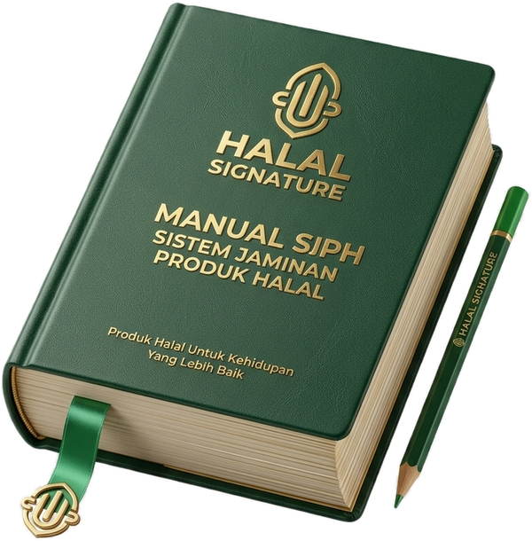

Pendampingan sertifikasi halal BPJPH skema reguler, dari dokumen hingga sertifikat terbit.

Signature Halal hadir sebagai mitra pendamping sertifikasi halal bagi pelaku usaha yang ingin memenuhi kewajiban sertifikasi halal sesuai regulasi Badan Penyelenggara Jaminan Produk Halal (BPJPH), melalui skema reguler. Kami mendampingi proses dari awal pengajuan hingga sertifikat terbit, dengan pendekatan personal yang disesuaikan dengan kondisi dan skala usaha masing-masing klien.
Kami telah mendampingi berbagai jenis usaha, mulai dari dapur produksi skala besar, rumah potong unggas, hingga UMKM pangan, kosmetik, dan produk kimia.
Kami mendampingi pelaku usaha melalui seluruh tahapan sertifikasi halal skema reguler, mulai dari persiapan dokumen, pengajuan ke BPJPH, proses audit oleh Lembaga Pemeriksa Halal (LPH), hingga penerbitan sertifikat.
Diskusi kebutuhan, pengecekan kelengkapan legalitas usaha, dan identifikasi bahan/proses produksi.
SelengkapnyaManual Sistem Jaminan Produk Halal, daftar bahan, dan diagram alir proses produksi sesuai standar BPJPH.
SelengkapnyaPengajuan permohonan sertifikasi halal melalui sistem SIHALAL, termasuk pemilihan Lembaga Pemeriksa Halal.
SelengkapnyaPendampingan audit lapangan oleh LPH serta tindak lanjut atas temuan atau catatan hasil audit.
SelengkapnyaPendampingan hingga penetapan status kehalalan produk melalui sidang komisi fatwa MUI.
SelengkapnyaMelayani sektor pangan, kosmetik, dan produk kimia, dari UMKM hingga industri skala besar.
SelengkapnyaDelapan tahapan pendampingan yang kami jalankan bersama klien, dari konsultasi awal hingga sertifikat halal terbit.
Diskusi kebutuhan, pengecekan legalitas usaha, dan identifikasi bahan/proses produksi.
Penyusunan manual Sistem Jaminan Produk Halal, daftar bahan, dan diagram alir produksi.
Pengajuan permohonan melalui sistem SIHALAL, termasuk pemilihan Lembaga Pemeriksa Halal.
Pengecekan kelengkapan dan kesesuaian dokumen sebelum audit lapangan dijadwalkan.
Pemeriksaan langsung ke lokasi produksi: bahan, proses, alat, dan penyimpanan.
Tindak lanjut atas temuan audit, termasuk penyediaan bukti pendukung tambahan.
Penetapan status kehalalan produk melalui sidang komisi fatwa.
Sertifikat halal dapat diunduh melalui SIHALAL, siap digunakan pada label produk.
Bukan sekadar transaksional. Pendekatan disesuaikan dengan kondisi dan skala usaha Anda.
Pangan, kosmetik, dan produk kimia, dari UMKM hingga industri skala besar.
Dari awal pengajuan hingga sertifikat terbit, setiap tahap dikomunikasikan dengan jelas.
Berdasarkan Undang-Undang No. 33 Tahun 2014 tentang Jaminan Produk Halal (UU JPH), berikut kategori produk yang wajib memiliki sertifikat halal.
Signature Halal membantu Anda memahami kewajiban ini dan mendampingi proses sertifikasinya secara menyeluruh.
Kami siap membantu menjawab pertanyaan seputar sertifikasi halal skema reguler untuk usaha pangan, kosmetik, maupun produk kimia Anda.
Jl. Kramat Raya No. 164, RT.7/RW.2, Kenari, Kec. Senen, Jakarta Pusat, DKI Jakarta 10430
0813-4364-0048
signaturehalal@gmail.com
@signaturehalal
www.signaturehalal.id